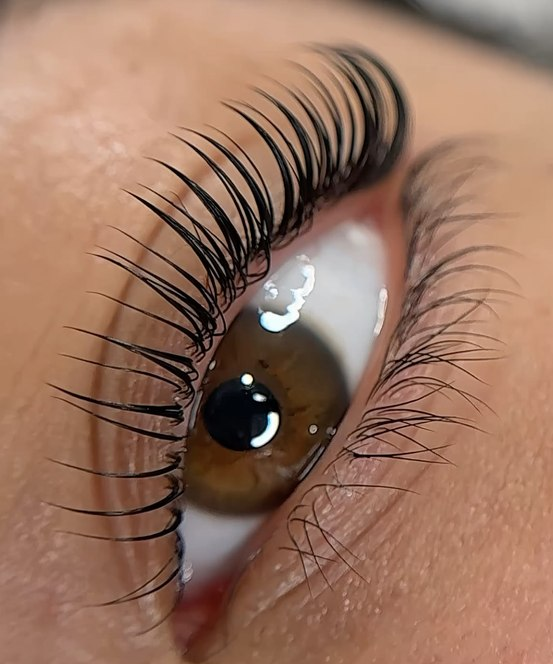

Protocolo de mirada · Granollers
Nohuska Korean Gaze™
Un ritual completo para transformar la mirada de forma natural: diseño Nohuska Natural Brow™, lifting coreano y tinte vegano de pestañas, elegidos después de valorar tus cejas y pestañas.


Un protocolo, tres decisiones personalizadas
Cejas definidas y pestañas elevadas sin perder naturalidad.
Korean Gaze no aplica la misma combinación a todas las miradas. Primero observamos la forma de las cejas, la dirección del pelo, la longitud de las pestañas y el efecto que quieres conseguir. Después ajustamos cada fase para que cejas y pestañas se vean equilibradas entre sí.
El protocolo trabaja el pelo natural y es temporal. No incluye extensiones ni micropigmentación. Si detectamos que otra técnica puede encajar mejor, te lo explicamos antes de reservar.
Qué incluye Nohuska Korean Gaze™
Resultados reales · Nohuska
Una mirada diseñada como conjunto.
Las fotografías muestran casos propios y autorizados. El resultado depende del pelo natural, el estado inicial y la respuesta de cada persona.
Valoración previa
¿Puede encajar con tu mirada?
Puede ser una buena opción si deseas ordenar y definir tus cejas, elevar tus pestañas naturales y ganar intensidad sin añadir extensiones. Antes del servicio revisamos el estado del pelo y cualquier antecedente o sensibilidad que nos comuniques.
Te atendemos con cita previa en Avinguda Sant Esteve, 40, 08402 Granollers, de lunes a sábado de 10:00 a 20:00.
Elige con información clara
- Trabaja tus cejas y pestañas naturales.
- No incluye extensiones ni micropigmentación.
- La combinación se adapta a cada caso.
- Productos veganos y cruelty free.
Preguntas sobre Korean Gaze
¿Qué incluye el protocolo?
Incluye la valoración y, cuando el pelo lo permite, Nohuska Natural Brow™, lifting coreano y tinte vegano de pestañas.
¿Es micropigmentación?
No. Korean Gaze trabaja el pelo natural de cejas y pestañas con técnicas temporales. La micropigmentación se valora como un servicio diferente.
¿Dónde se realiza?
En Nohuska Beauty Lab, Avinguda Sant Esteve, 40, 08402 Granollers, con cita previa.
¿Es vegano y cruelty free?
El protocolo se plantea con productos veganos y cruelty free. Antes del servicio revisamos también el estado del pelo y las posibles sensibilidades que nos comuniques.
Conoce cada parte del protocolo
Diseña tu mirada completa.
Valoración personalizada y cita previa en Granollers.